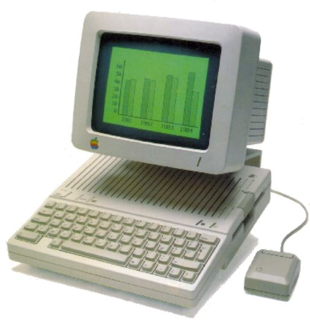

Apple released the Apple IIc in April 1984, billing it as a portable Apple II, because it could be easily carried, though unlike modern portables it lacked a built-in display and battery. The IIc even sported a carrying handle that folded down to prop the machine up into a typing position. It was the first of three Apple II models to be made in the Snow White design language, and the only one that used its unique creamy off-white color. The other Snow White computers from the Apple II series, the IIGS and the IIc Plus, were light gray, called Platinum by Apple.
The Apple IIc was the first Apple II to use the 65C02 low-power variant of the 6502 processor, and featured a built-in 5.25-inch floppy drive and 128 kB RAM, with a built-in disk controller that could control external drives, composite video (NTSC or PAL), serial interfaces for modem and printer, and a port usable by either a joystick or mouse. Unlike previous Apple II models, the IIc had no internal expansion slots at all, this being the means by which its compact size was attained. Third parties did eventually figure out how to wedge up to 1 MB of additional memory and a real-time clock into the machine, and a later revision of the motherboard provided an expansion slot that could accept an Apple memory card bearing up to 1 MB of RAM. The disk port, originally intended for a second 5.25-inch floppy drive, eventually was able to interface to 3½-inch disk drives and (via third parties) even hard disks. The IIc machines supported the 16 color DHGR (double hi-resolution graphics) graphics mode and from a software standpoint were identical to the //e.
